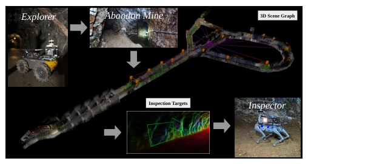
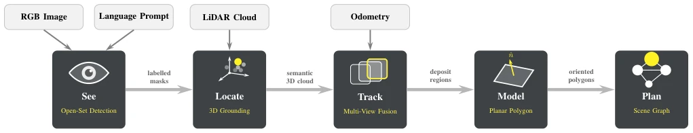
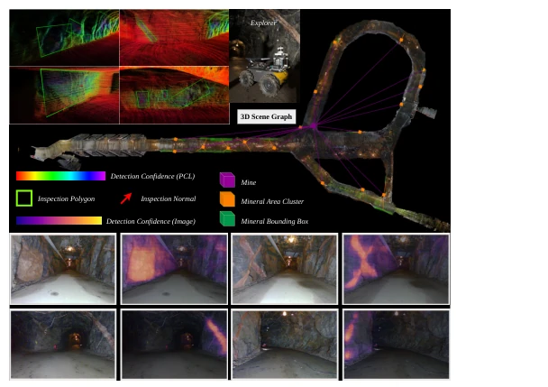
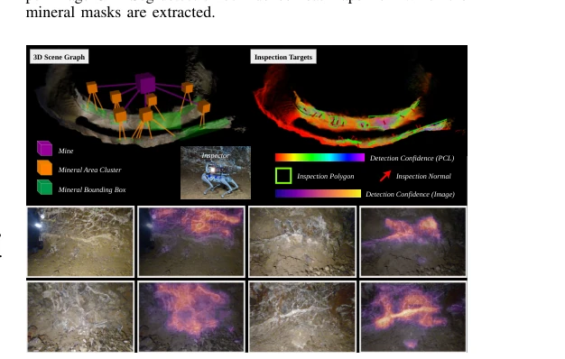
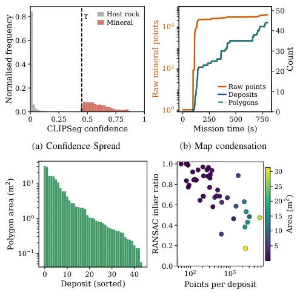

Towards Spatial Perception for Heterogeneous Robot Collaboration in Subterranean Mining Environments
Mario Alberto Valdes Saucedo, Akash Patel, Christoforos Kanellakis, George Nikolakopoulos abspdf
论文点评Review
这篇论文试图解决地下采矿中“跑得快”和“看得清”不可兼得的经典难题。作者搞了个 Explorer 和 Inspector 的双机协作，核心贡献在于把“零样本视觉语言分割”硬塞进了充满粉尘和黑暗的真实矿井里，还能把一堆噪点云压缩成几个带法向量的多边形传给后手。这操作在带宽受限的地下环境里确实有点东西，毕竟传原始点云是找死。不过，把复杂的矿脉强行拟合成平面多边形，对于那些扭曲断裂的地质结构可能有点过于理想化，毕竟矿脉不是豆腐块。另外，依赖 CLIPSeg 这种预训练模型在低光照、高反光环境下能否稳定，虽然作者说做了，但没给太多鲁棒性失败的案例，略显乐观。总的来说，是个工程上很实用的接口设计，但理论深度上属于“够用就好”，通用性存疑。
This paper attempts to solve the classic dilemma in underground mining where "running fast" and "seeing clearly" cannot be achieved simultaneously. The authors devised a dual-robot collaboration between an Explorer and an Inspector, with the core contribution lying in forcefully integrating "zero-shot visual language segmentation" into real mines filled with dust and darkness, while compressing a pile of noisy point clouds into a few polygons with normals to pass to the successor. This operation is indeed quite something in bandwidth-limited underground environments, after all, transmitting raw point clouds is suicidal. However, forcibly fitting complex ore veins into planar polygons might be a bit too idealistic for those twisted and fractured geological structures, after all, ore veins are not blocks of tofu. Additionally, whether relying on pre-trained models like CLIPSeg remains stable in low-light, high-reflectance environments, although the authors claim to have done so, they did not provide many robustness failure cases, appearing slightly optimistic. Overall, it is a very practical interface design from an engineering perspective, but in terms of theoretical depth, it belongs to "good enough," with generalizability in doubt.
研究动机Motivation
地下采矿自动化面临一个根本矛盾：长距离探索需要轻量化平台，而资源表征需要重型传感器，单一机器人无法兼顾。现有的地下探索工作 [1]–[4] 主要解决了如何到达和覆盖环境，将地图视为几何而非内容，忽略了“识别特定资源”并“传递给专用机器人”的接口问题。在带宽受限、无先验模型的地下环境中，Explorer 不能只传点云，必须告诉 Inspector 矿在哪里、是什么、以及从哪个角度观测。现有开放词汇 3D 感知方法 [12]–[14] 虽然丰富，但计算和传输开销大，不适合多机协作。因此，需要一种紧凑、可执行、无需特定矿床训练的感知接口，这正是本文试图填补的空白，旨在实现异构机器人间的语义握手。
Underground mining automation faces a fundamental contradiction: long-distance exploration requires lightweight platforms, while resource representation requires heavy sensors, and a single robot cannot accommodate both. Existing underground exploration work [1]–[4] mainly solves how to reach and cover the environment, treating maps as geometry rather than content, ignoring the interface problem of "identifying specific resources" and "passing them to dedicated robots." In bandwidth-limited, prior-model-free underground environments, the Explorer cannot just transmit point clouds; it must tell the Inspector where the ore is, what it is, and from which angle to observe. Existing open-vocabulary 3D perception methods [12]–[14], although rich, have high computational and transmission overheads, making them unsuitable for multi-robot collaboration. Therefore, a compact, executable, perception interface without specific deposit training is needed, which is exactly the gap this paper attempts to fill, aiming to achieve semantic handshake between heterogeneous robots.

Fig. 1: Heterogeneous two-robot mining mission. The Explorer maps the mine while running the proposed onboard open-set mineral perception pipeline, it then transmits a PCD map and a set of oriented mineral polygons to the Inspector, which plans close-range inspection along each polygon’s normal.
The overall process is divided into five steps: perception, localization, tracking, modeling, and planning. First, CLIPSeg is used for zero-shot semantic segmentation of RGB images, generating 2D masks via natural language prompts (e.g., "white mineral"). Second, the masks are projected onto the synchronized LiDAR point clouds to achieve 3D localization. Next, multi-frame noisy points are fused into persistent regions of interest through cross-view clustering (DBSCAN + IoU merge). The core innovation lies in geometric abstraction: using RANSAC to fit planes for each region, extracting the minimum area bounding rectangle after projecting points onto the plane, generating directed polygons with normals. Finally, these polygons are organized into a three-layer 3D scene graph (Mine Area - Mine Cluster - Mine Point), supporting density-based priority sorting. The final output is a point cloud map and a set of polygons, provided for the Inspector to conduct close-range viewpoint planning, achieving a closed loop from semantic perception to motion planning.

Fig. 2: Onboard perception pipeline. The Explorer transforms its raw sensor streams (top: RGB image, language prompt, LiDAR cloud, and odometry) into a compact 3D scene graph of inspection targets through five stages. See – zero-shot segmentation with CLIPSeg detects the prompted mineral in the image; Locate – the labeled mask is fused with the synchronized LiDAR scan to ground each detection in 3D; Track – detections are merged and deduplicated across the trajectory into persistent deposit regions; Model – each region is abstracted as an oriented planar polygon encoding position, extent, and surface normal; Plan – the polygons are organized into a 3D scene graph and transmitted to the Inspector.
Validated in two real environments: the LTU underground test facility (iron vein) and a Greek magnesium mine (magnesium ore). Quantitative analysis shows that CLIPSeg confidence can effectively separate minerals from host rock (mean 0.6 vs 0.02). Raw point clouds (approximately 38,000 points) are compressed into dozens of persistent polygons, reducing data volume by two orders of magnitude, suitable for weak network transmission. Plane fitting quality varies with ore point size; compact ore points fit well, while large ore veins require polygon descriptions. Experiments demonstrate the robustness of the zero-shot method under different mineral types and lighting conditions, without fine-tuning weights. Additionally, the scene graph structure supports multi-robot parallel allocation, demonstrating system scalability potential, although currently only the single Inspector configuration has been verified.

Fig. 3: Iron-vein results (LTU SubT facility). Right/center: the reconstructed mine point cloud overlaid with the onboard-generated 3D scene graph, in which a root Mine node (magenta) connects to the mineral area clusters (orange), each grouping the per- deposit mineral bounding boxes (green). Top-left insets: the oriented inspection polygons (green) and their surface normals (red), fitted to representative deposits, the cloud is colored by per-point detection confidence. Bottom: eight representative onboard frames with the per-image CLIPSeg detection-confidence heat-maps from which the mineral masks are extracted.

Fig. 4: Magnesite results (Grecian Magnesite, Koutizi). Top-left: the 3D scene graph linking the root Mine node (magenta) to its mineral area clusters (orange) and mineral bounding boxes (green). Top-right: the resulting inspection targets, i.e. the oriented polygons (green) and surface normals (red) over the confidence-colored point cloud. Bottom: per-image CLIPSeg detection-confidence heat-maps.

Fig. 5: Quantitative analysis. (a) Per-point CLIPSeg detection confidence cleanly separates the detected mineral (¯c≈0.60) from the host rock (¯c≈0.02), with the segmentation threshold τ (dashed) lying in the valley between the two modes. (b) Over the run the ∼38k raw mineral points (orange) are condensed by the cross-view clustering of Sec. III-C into a few dozen persistent deposits and inspection polygons (blue/green), a handover roughly two orders of magnitude smaller than the raw semantic cloud. (c) Distribution of inspection-polygon areas across deposits, spanning compact pockets to larger vein faces. (d) RANSAC plane-fit inlier ratio versus deposit size, color corresponds to polygon area, compact deposits are well approximated by a single plane, while the largest deposits are less pl